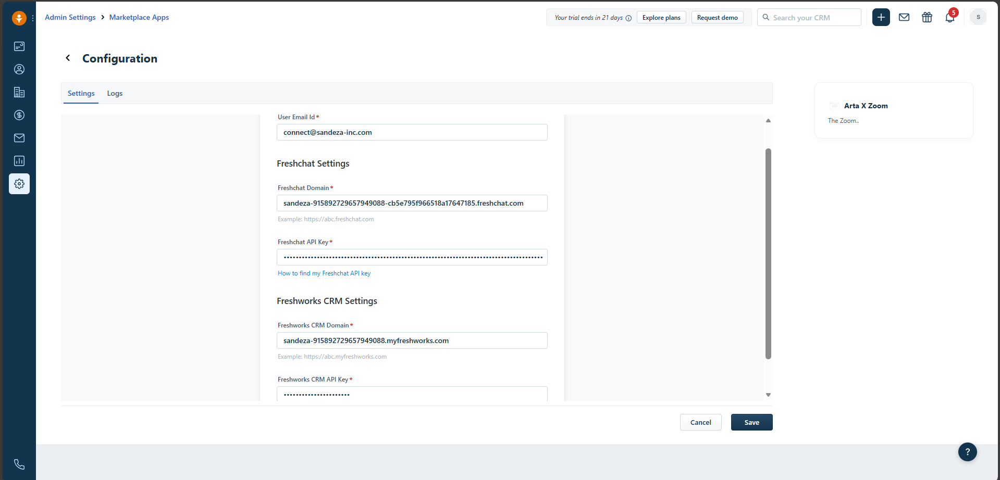
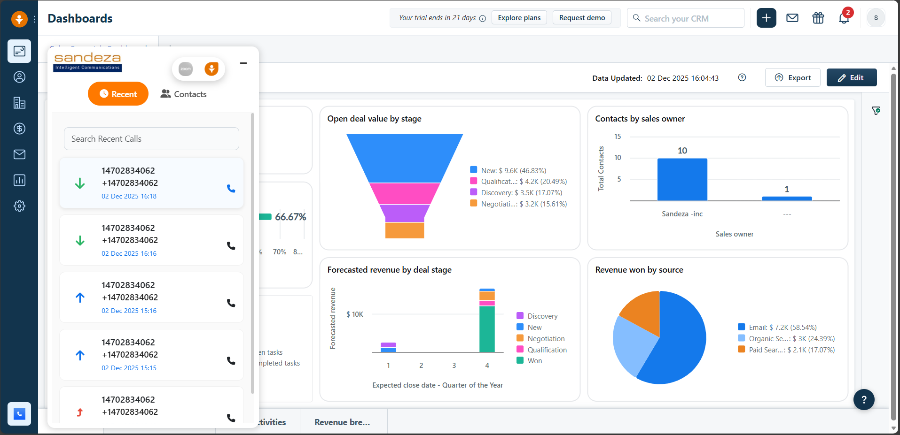
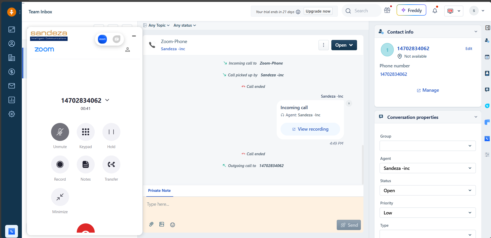
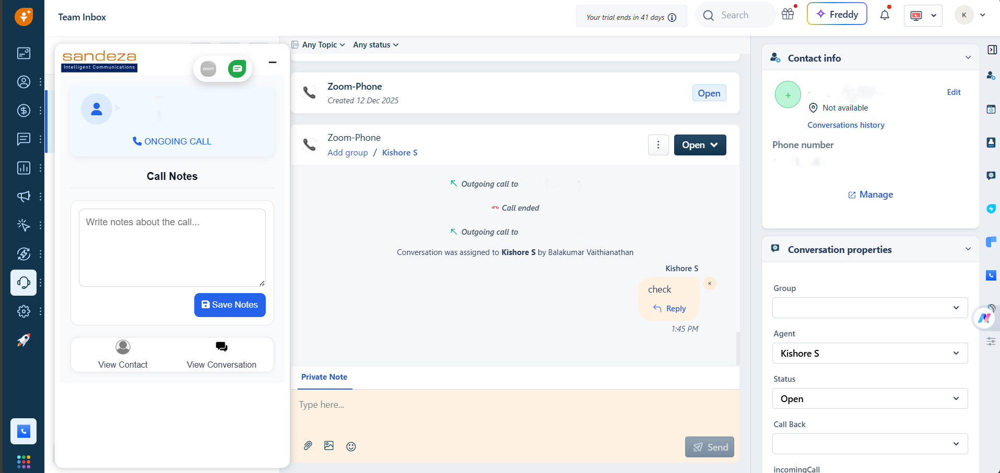
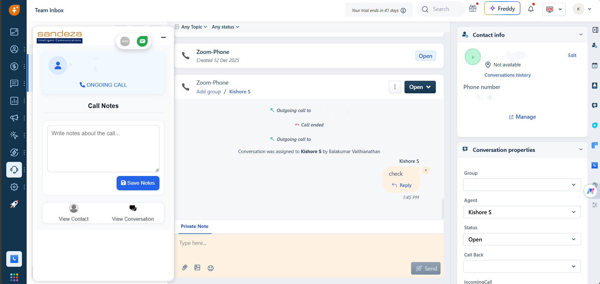

Overview
With Arta Zoom, your team can handle Zoom calls inside Freshsales or Freshchat. No app switching—just faster, more informed support.
- In‑app calling Place/receive calls right inside your helpdesk.
- Context-rich View contact & conversation info during calls.
- Auto-logged Calls & notes are saved to conversations.
1. Install & Authorize
- Go to Settings → Apps/Marketplace in Freshsales/Freshchat.
- Search for Arta Zoom and click Install.
- Enter your Freshchat domain and Admin API key.
- Enter your Freshworks domain and Admin API key.
- Log in with your Zoom account to authorize.
- Once installed, the Arta Zoom widget appears in your workspace.
Tip: Ask your admin to complete installation. Agents only need to sign in with Zoom.
2. Make Calls
Use the Zoom dial pad or select a contact. A new conversation is created automatically and linked to the call.
 3. In‑Call Controls & Notes
- Mute/Unmute for noise-free conversations.
- Hold when you need to consult a colleague.
- Notes during or after the call for accurate context.
- Conference add agents/supervisors if needed.
 

4. Receive Calls
Incoming calls trigger a popup and open the conversation view. Click View Contact to see the customer profile and conversation history.

5. Missed Calls
- Missed calls are logged in your inbox based on agent availability.
- Use the built-in Callback option to return calls quickly.

6. Voicemail
If your agents are unavailable, customers can leave a voicemail. These voicemails are stored securely and linked to the customer’s conversation in Freshsales or Freshchat.
- Automatic Logging – Voicemails are saved as conversations with playback options.
- Easy Playback – Agents can listen directly from the chat thread.
- Callback Option – Respond quickly with the built-in dial-back button.
- Context Retention – Voicemails include the customer’s phone number and time of call.
Benefits at a Glance
| Benefit | Description |
|---|---|
| Unified Experience | All call actions inside Freshsales/Freshchat. |
| Agent Efficiency | Controls & notes at your fingertips. |
| Better Context | Contact & Conversation info available during calls. |
| Clear History | Calls and notes saved to conversations. |
FAQ
Do I need to switch between Zoom and Freshsales?
No. Arta Zoom runs inside your FreshSales.
Can I add notes during a call?
Yes—during or
after the call.
What if I miss a call?
It's logged as a
conversation; you can call back instantly.
Is voicemail available?
Yes—voicemail is
supported.